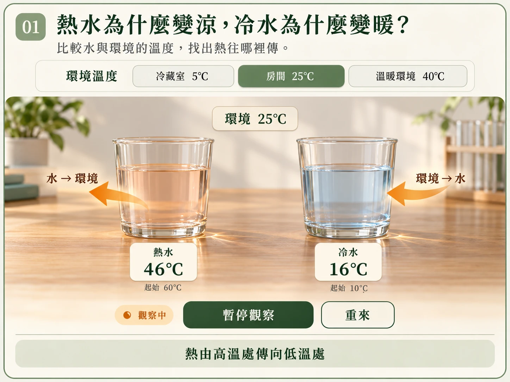

01 熱傳方向
同一個房間，熱水變涼，冷水卻變暖，為什麼？
- 呈現方式
- 並排兩杯水；可選環境、開始／暫停觀察與重來。讀數連續變化，箭頭顯示水與環境之間的淨熱傳方向。
- 要帶出的發現
- 先比較溫度高低：熱水向較冷環境放熱，冷水從較暖環境吸熱。
六個學習區塊與一個小測的架構已確認。本頁供檢視故事與呈現設計；第一區圖片中的控制項為靜態示意。
小葵剛替兩杯水記下溫度，整理了幾樣器材，熱水和冷水的讀值就變了。她想知道水和周圍發生了什麼事，也想找出讓水溫維持久一點的方法。阿公提議，先追蹤溫度的變化，再找出熱傳遞的路徑。
同一個房間，熱水變涼，冷水卻變暖，為什麼？
溫度會一直變下去嗎？
阿公把湯匙一端浸入熱水，小葵發現柄也變暖。
熱也會被流動的水或空氣帶走嗎？
太陽和地球沒有接觸，中間還有太空，能量怎麼傳來？
已經找到幾條路，怎麼讓水溫變慢一點？
換成保冷水壺，小葵能自行找到漏熱路徑嗎？
比較水與環境的溫度，找出熱往哪裡傳。
「同一個房間，熱水變涼，冷水卻變暖，怎麼會相反？」
「先比一比水和房間誰的溫度高，再看看它們怎麼變。」

「熱水向環境放熱，冷水從環境吸熱，原來都和溫度差有關！」
「溫度表示冷熱程度；熱是因溫度差而傳遞的能量。那溫度會一直變下去嗎？」
| 操作 | 預定回應 |
|---|---|
| 初始 | 環境 25°C、左杯熱水 60°C、右杯冷水 10°C，杯子材質、大小與水量相同。準備狀態尚未計時。 |
| 開始觀察 | 熱水降溫、冷水升溫；同時呈現各自與環境之間的淨熱傳方向。溫度變化採教學加速，時間不當作真實實驗時間。 |
| 暫停 | 溫度與箭頭動畫停在同一時刻，可比較讀數、杯子與環境。 |
| 重來 | 回復所選環境與兩杯初溫，停止播放。 |
| 換環境 | 提供冷藏室 5°C／房間 25°C／溫暖環境 40°C；換條件時回到初始並停止觀察，避免學生混淆正在變動的狀態。 |
| 冷藏室 5°C | 兩杯水都比環境暖，皆向環境放熱。用同一杯冷水在不同環境中的差異，強化判斷必須比較相對溫度。 |
互動以未結冰、不含冰塊的冷水示意。兩杯與各自周圍的環境交換熱，箭頭表達淨熱傳方向。正式製作會沿用既有角色頭像，並以可操作元件呈現讀數與控制。